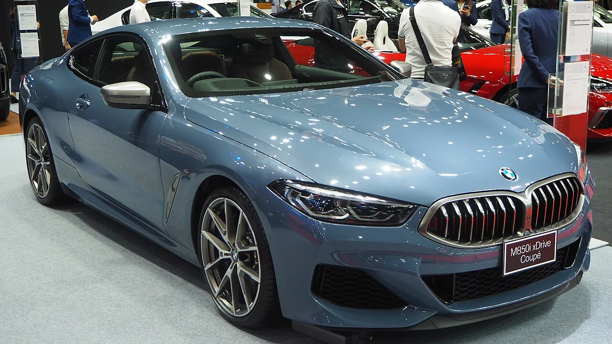
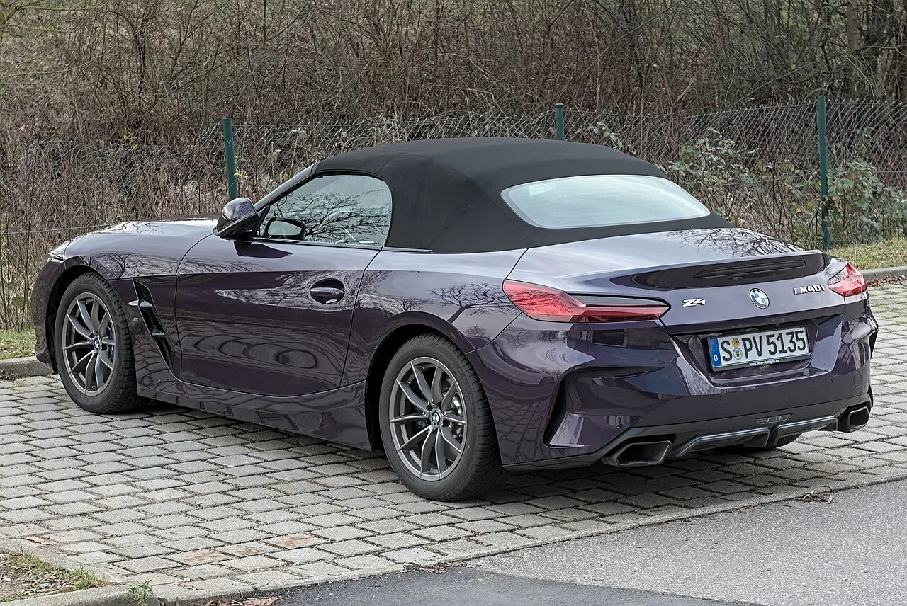
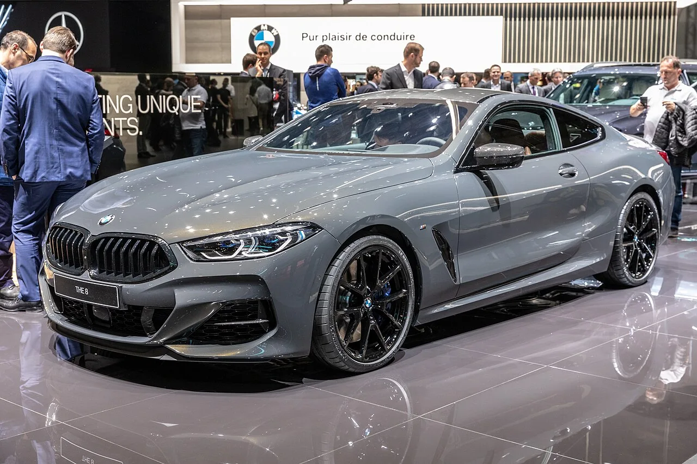

▲ Z4는 약 5년간 1만 대 남짓 생산되고 2026년형으로 마무리된다 ⓒ Wikimedia Commons (CC BY-SA 4.0)
단종 소식이 뜨면 값이 오른다는 말이 있습니다.
절반만 맞습니다.
BMW가 Z4와 8시리즈를 2026년형으로 마무리합니다. 두 차의 전망은 서로 다릅니다.
1. 사라지는 두 대
| 구분 | Z4 | 8시리즈 |
|---|---|---|
| 마지막 연식 | 2026년형 | 2026년형 |
| 세대 시작 | 약 5년 전 | 2018년 |
| 총 생산 | 1만 대 남짓 | — |
| 연 판매 | 2025년 2,113대 | 2023~24년 약 5,500대 |
Z4의 '1만 대 남짓'이라는 숫자가 눈에 띕니다. 5년 동안 만든 총량입니다. 대량 생산 브랜드의 모델치고는 매우 적습니다.
📍 희소성이 가치를 만드는 조건
적게 만들었다는 사실만으로는 부족합니다. 원하는 사람이 있어야 합니다. 안 팔려서 적게 만든 차와, 못 구해서 적게 팔린 차는 다릅니다. Z4는 수요가 있으면서 물량이 적은 쪽에 가깝습니다.
2. 왜 없어지나
BMW는 8시리즈에 대해 "표준 제품 수명 주기의 끝에 도달했다"고 밝혔습니다.
다만 CarBuzz는 판매 부진이 실제 배경이라고 지적합니다. 여기에 더 큰 이유가 있습니다. BMW가 노이에 클라세 전동화 시대로 방향을 틀면서 내연기관 모델의 우선순위를 낮추고 있다는 것입니다.

▲ 8시리즈는 2018년 등장 이후 8년 만에 막을 내린다 ⓒ Wikimedia Commons (CC BY-SA 4.0)
3. 지금 중고 시세
| 연식 | 주행거리 | 가격 |
|---|---|---|
| 2020 | 60,178마일 | $39,590 |
| 2022 | 13,816마일 | $53,990 |
| 2023 | 22,962마일 | $41,590 |
| 모델 | 주행거리 | 가격 |
|---|---|---|
| 2020 840i | 58,889마일 | $38,590 |
| 2023 840i | 41,132마일 | $46,590 |
| M850i | — | $41,590 ~ $41,990 |
8시리즈 표에서 눈에 띄는 지점이 있습니다. 최상위인 M850i가 840i보다 싸게 나와 있습니다. V8 모델이 직렬 6기통 모델보다 저렴하다는 뜻입니다.
📍 왜 상위 모델이 더 싼가
고성능 모델일수록 신차 가격이 높아 감가 폭도 큽니다. 여기에 유지비와 연비 부담이 중고 수요를 좁힙니다. 반면 구매 관점에서는 기회입니다. 같은 값에 V8을 살 수 있기 때문입니다.
4. 값이 오를까 — 두 차의 답이 다르다
| 구분 | Z4 | 8시리즈 |
|---|---|---|
| 감가 성향 | 7년 뒤 MSRP의 약 60% 유지 | 5년에 약 50% 상실 |
| 단종 효과 | 단기 상승 가능 | 희소성으로 흐름을 뒤집기 어려움 |
Z4는 원래부터 값을 잘 지켜온 차입니다. 7년 뒤에도 신차가의 60%를 유지한다는 것은 BMW 라인업에서 이례적입니다. 여기에 단종이 겹치면 단기 상승이 나타날 수 있습니다.
8시리즈는 다릅니다. BMW 대형 쿠페의 전형적인 감가 곡선을 그려왔고, CarBuzz는 희소성만으로 이 흐름을 크게 뒤집기는 어렵다고 봅니다.

▲ Z4는 7년 뒤에도 신차가의 약 60%를 유지해 왔다 ⓒ Wikimedia Commons (CC BY-SA 4.0)
5. '단종=상승' 공식이 틀리는 이유
✅ 단종차 값이 오르려면 필요한 것
· 대체 불가능성 — 같은 성격의 후속이 없어야 합니다
· 적은 생산량 — 시장에 매물이 계속 나오면 오르지 않습니다
· 유지 가능성 — 부품 공급과 정비가 되어야 합니다
· 기존 잔존가치 — 이미 값을 지켜온 차가 더 오릅니다
마지막 항목이 핵심입니다. 단종은 이미 있던 흐름을 가속할 뿐, 방향을 바꾸지는 않습니다. 떨어지던 차는 단종돼도 계속 떨어집니다.
Z4는 첫 번째 조건도 충족합니다. BMW가 전동화로 방향을 틀면서, 내연기관 후륜구동 로드스터라는 자리를 채울 후속이 예정돼 있지 않습니다.

▲ 8시리즈는 M850i가 840i보다 싸게 나오는 구간이 생겼다 ⓒ Wikimedia Commons (CC BY-SA 4.0)
6. 정리
BMW Z4와 8시리즈가 2026년형을 끝으로 생산을 마칩니다. Z4는 약 5년간 1만 대 남짓 생산됐고 2025년 판매는 2,113대, 8시리즈는 2023~24년 연 약 5,500대였습니다.
다만 두 차의 전망은 다릅니다. Z4는 7년 뒤에도 MSRP의 약 60%를 지켜온 차라 단기 상승 여지가 있습니다. 8시리즈는 5년에 약 50%를 잃는 흐름이라 희소성만으로 뒤집기 어렵다는 평가입니다.
단종은 흐름을 가속할 뿐 방향을 바꾸지 않습니다. 다만 8시리즈의 M850i가 840i보다 싸게 나오는 구간은 구매자 입장에서 눈여겨볼 만합니다.